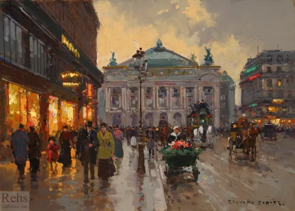

MTVM - Chương 3

Chương 3
Đó là một tối mùa xuân ấm áp và tôi ngồi bên chiếc bàn nơi bậc thềm của quán Napolitain sau khi Robert rời đi, ngắm nhìn trời chuyển tối và những tấm bảng hiệu bắt đầu sáng đèn, và những cột đèn giao thông cứ chuyển tín hiệu từ màu xanh sang đỏ, và đám đông lướt qua, và những cỗ xe ngựa gõ lộc cộc trên mặt đường bên hàng xe taxi nối đuôi nhau, và mấy ả poule[1], một mình hoặc theo cặp, kiếm tìm một bữa tối. Tôi thấy một cô nàng xinh xắn lướt qua bàn mình và nhìn cô ta đi lên trên phố và lạc mất bóng, rồi thấy một cô khác, và cô gái đầu tiên quay trở lại. Cô lướt qua lần nữa và tôi bắt được ánh mắt cô nàng, và cô nàng tiến lại rồi ngồi xuống. Anh bồi bước tới.
“À, em uống gì?” tôi hỏi.
“Pernod[2].”
“Thứ đấy không tốt cho mấy cô bé đâu.”
“Cô bé cái đầu ông ý. Dites garçon, un pernod[3].”
“Thêm một ly như thế cho tôi nữa.”
“Sao thế?” cô ta hỏi. “Ông đi dự tiệc à?”
“Ừ, em đi nhé?”
“Em không biết. Ông không chắc được điều gì ở cái thành phố này đâu.”
“Em không thích Paris à?”
“Không.”
“Thế sao em không đi đâu đó?”
“Chẳng có nơi nào cả.”
“Em hạnh phúc, thế là đủ.”
“Hạnh phúc cái quái gì!”
Pernod là một thứ chất lỏng màu xanh giống như absinthe[4]. Khi thêm nước vào nó chuyển sang màu sữa. Có vị như cảm thảo và có tính kích thích tốt, nhưng nó cũng có thể nhấn chìm anh. Chúng tôi ngồi và uống, và cô gái trông thật ủ rũ.
“À,” tôi nói, “em mời tôi đi ăn tối nhé?”
Cô nàng mỉm cười rạng rỡ và tôi nhận ra vì sao cô ta lại chẳng mấy khi cười. Rõ ràng khi mím môi cô nàng xinh hơn hẳn. Tôi trả tiền rượu và chúng tôi đi ra phố. Tôi gọi một chiếc xe ngựa và người lái xe dừng lại bên lề đường. Khi chúng tôi đã ngồi yên vị ở phía sau, chiếc xe ngựa chậm rãi và nhẹ nhàng đưa chúng tôi tới đại lộ Opéra[5], qua những cánh cửa đã khóa chặt của các cửa hàng, khung cửa sổ thì vẫn sáng ánh đèn, cả Đại lộ rộng lớn và sáng trưng và thưa thớt bóng người. Xe đi qua văn phòng tờ báo New York Herald[6] với cửa sổ treo đầy những chiếc đồng hồ.
“Những cái đồng hồ này để làm gì thế?” cô nàng hỏi.
“Chúng cho biết giờ trên toàn nước Mỹ.”
“Ông đừng trêu em nhé.”
Chúng tôi rẽ ra khỏi Đại lộ tới đường Pyramides[7], băng qua cột đèn giao thông của đường Rivoli[8], và qua cánh cổng dẫn tới Tuileries[9]. Cô cuộn mình vào lòng tôi và tôi vòng tay quanh người cô. Cô ngước lên, chờ đợi một nụ hôn. Cô chạm vào tôi bằng một tay và tôi gạt tay cô ra.
“Thôi đừng.”
“Sao thế? Ông ốm à?”
“Ừ.”
“Ai cũng ốm cả. Em cũng thế.”
Chúng tôi ra khỏi Tuileries và đi vào ánh sáng, dọc theo sông Seine và rẽ vào phố Saint Pères[10].
“Ông không được uống pernod đâu nếu như đang ốm.”
“Em cũng vậy.”
“Em thì không sao. Nó không ảnh hưởng tới phụ nữ.”
“Gọi em là gì nhỉ?”
“Georgette. Còn ông?”
“Jacob.”
“Đấy là một cái tên Flamand[11].”
“Nó cũng là một cái tên Mỹ nữa.”
“Ông không phải là người Flamand đấy chứ?”
“Không, tôi là người Mỹ.”
“Tốt, em ghét mấy gã Flamand lắm.”
Lúc ấy chúng tôi đã tới nhà hàng. Tôi bảo cocher[12] dừng lại. Chúng tôi bước xuống xe và Georgette không thích lối kiến trúc của nhà hàng. “Cái nhà hàng này chẳng có gì đặc biệt cả.”
“Không,” tôi nói. “Có thể là em nên tới Foyot thì hơn. Tại sao em không giữ chiếc xe lại và đến đó nhỉ?”
Tôi mang theo cô nàng bởi vì một giây phút nảy sinh thứ suy nghĩ ủy mị rằng sẽ tốt hơn cả nếu dùng bữa cùng một ai đó. Đã khá lâu rồi tôi mới ăn tối với một ả poule, và tôi đã quên khuấy mất cái lối ấy ngớ ngẩn đến nhường nào. Chúng tôi bước vào trong quán, lướt qua Madame[13] Lavine bên quầy tính tiền và vào một căn phòng nhỏ. Georgette phấn khởi lên đôi chút với mấy món ăn.
“Ở đây không tệ lắm,” cô nàng nói. “Không được thời thượng lắm, nhưng thức ăn thì ổn.”
“Tốt hơn so với ăn ở Liège[14].”
“Ý ông là Brussels[15].”
Chúng tôi gọi một chai rượu nữa và Georgette kể một câu chuyện cười. Cô nàng mỉm cười và lộ hết mấy cái răng xấu, và chúng tôi chạm cốc.
“Ông không phải người xấu,” cô nàng nói. “Thật buồn là ông lại bệnh. Chúng mình rất hợp nhau. Chuyện gì đã xảy ra với ông vậy?”
“Tôi bị thương trong chiến tranh,” tôi trả lời.
“Ôi, cuộc chiến khốn kiếp.”
Chúng tôi có thể tiếp tục bàn luận về cuộc chiến và cùng đồng ý rằng trên thực tế đây là một thảm họa đối với nền văn minh nhân loại, và có thể tốt nhất là nên tránh thật xa. Nhưng tôi đã đủ chán rồi. Ngay lúc đó có tiếng gọi vọng lại từ một gian phòng khác: “Barnes! Đúng là Barnes! Jacob Barnes!”
“Có một người bạn gọi tôi,” tôi giải thích, và bước ra khỏi phòng.
Braddocks ngồi bên chiếc bàn lớn với một hội: Cohn, Frances Clyne, bà Braddocks, và nhiều người khác mà tôi không quen.
“Anh đi nhảy chứ?” Braddocks hỏi.
“Nhảy gì?”
“Sao thế, nhảy ấy mà. Anh không biết là chúng tôi tổ chức lại rồi à?” bà Braddocks chen vào.
“Anh phải đi thôi, Jake ạ. Chúng tôi đều đi cả,” Frances nói từ đầu bàn bên kia. Cô ta nói chuyện với nụ cười nở trên môi.
“Dĩ nhiên anh ấy sẽ đi,” Braddocks nói. “Sang đây và dùng cà phê với chúng tôi nhé, Barnes.”
“Được thôi.”
“Gọi luôn cả bạn anh nữa,” bà Braddocks cười và nói. Bà là người Canada và có tất cả những đức tính dễ thương của họ.
“Cảm ơn chị, chúng tôi sẽ sang ngay,” tôi đáp lời. Tôi quay trở lại căn phòng nhỏ.
“Bạn ông là ai thế?” Georgette hỏi.
“Nhà văn và nghệ sĩ.”
“Ở bên này sông họ đông lắm.”
“Quá nhiều ấy chứ.”
“Em cũng nghĩ thế. Thế mà, đến giờ vài người cũng kiếm được kha khá.”
“À, ừ.”
Chúng tôi dùng nốt bữa và uống hết chỗ rượu. “Đi nào, tôi nói. “Chúng mình sang uống cà phê với mọi người thôi.”
Georgette mở túi xách của cô nàng, dặm thêm chút phấn lên mặt với chiếc gương nhỏ trong tay, tô lại son, và chỉnh lại mũ.
“Tốt rồi,” cô nàng nói.
Chúng tôi bước vào căn phòng đầy người và Braddocks và những đàn ông khác ngồi quanh bàn đứng hết dậy.
“Tôi xin hân hạnh được giới thiệu vị hôn thê của mình, quý cô Georgette Leblanc,” tôi cất tiếng. Georgette nở một nụ cười quyến rũ, và chúng tôi bắt tay với tất cả mọi người.
“Cô có liên quan gì đến Georgette Leblanc[16], cô ca sĩ không?” bà Braddocks hỏi.
“Connais pas[17],” Georggette trả lời.
“Nhưng các cô có cùng tên đấy,” bà Braddocks khăng khăng một cách thân mật.
“Không ạ,” Georgette trả lời. “Chẳng có gì liên quan cả. Tên tôi là Hobin.”
“Nhưng ông Barnes đây giới thiệu cô là cô Georgette Leblanc. Chắc chắn như vậy,” bà Braddocks vẫn một mực quả quyết, bà ta thích nói tiếng Pháp mà có thể không có chút khái niệm nào về những điều mình nói ra.
“Anh ấy ngốc lắm,” Georgette trả lời.
“Ồ, thì ra là một câu nói đùa,” bà Braddocks nhận ra.
“Vâng,” Georgette nói. “Để cười ấy mà.”
“Anh có nghe thấy không, Henry?” bà Braddocks gọi ông Braddocks từ bên kia chiếc bàn. “Ông Barnes đây giới thiệu vị hôn thê của mình là quý cô Leblanc, và tên thật của cô ấy là Hobin.”
“Đúng vậy, em yêu. Cô Hobin, anh biết cô ấy lâu lắm rồi.”
“Ồ, cô Hobin,” Frances Clyne gọi, nói liến thoắng bằng tiếng Pháp và không có vẻ tự hào và ngạc nhiên như bà Braddocks dù nó nghe ra quả thật giống như tiếng Pháp thực thụ. “Cô ở Paris lâu chưa? Cô có thích nơi đây không? Cô yêu Paris chứ?”
“Bà ấy là ai thế?” Georgette quay sang tôi. “Em có cần phải nói chuyện với bà ấy không?”
Cô quay về phía Frances, đang ngồi đó mỉm cười, tay khoanh lại, cái đầu vươn thẳng trên chiếc cổ dài, môi cô nàng mấp máy như thể sẵn sàng lập lại câu hỏi lần nữa.
“Không chị ạ, tôi không thích Paris. Nơi này đắt đỏ và bẩn thỉu quá.”
“Thế ư? Tôi lại thấy nó tuyệt đối sạch sẽ. Một trong những thành phố sạch sẽ nhất châu Âu này.”
“Tôi thì lại thấy nó bẩn.”
“Lạ thật đấy! Nhưng có thể bởi vì cô ở đây chưa lâu cũng nên.”
“Tôi ở đây cũng hơi lâu rồi.”
“Nhưng nơi này có nhiều người dễ thương lắm. Điều này thì ai cũng phải công nhận.”
Georgette quay sang tôi. “Ông có mấy người bạn dễ thương quá.”
Frances hơi ngà ngà say và muốn tiếp tục câu chuyện nhưng cà phê đã được dọn ra, cùng với Lavigne[18] và các loại rượu khác, sau đó chúng tôi rời đi và đến câu lạc bộ khiêu vũ của Braddocks.
Câu lạc bộ khiêu vũ là một bal musette[19] nằm trên đường Montagne Sainte Genevieve[20]. Năm tối trong tuần nơi đây trở thành tụ điểm giải trí của những người lao động sinh sống ở quận Pantheon[21]. Một tối trong tuần nó biến thành sàn nhảy. Tối thứ Hai thì đóng cửa. Khi chúng tôi đến nơi sàn nhảy vắng tanh, trừ một ông cảnh sát đang ngồi gần cửa, vợ của ông chủ câu lạc bộ đứng sau quầy bar mạ kẽm, và cả ông ta nữa. Cô con gái đi xuống dưới nhà khi chúng tôi bước vào. Trong quán kê những hàng ghế và bàn dài dọc theo căn phòng, và ở góc cuối cùng là sàn nhảy.
“Giá mà mọi người đến sớm hơn,” Braddocks nói. Cô con gái tiến tới và muốn biết chúng tôi uống gì. Ông chủ ngồi trên một chiếc ghế cao bên sàn nhảy và bắt đầu chơi phong cầm[22]. Ông ta đeo một chùm chuông quanh một mắt cá chân và lấy chân gõ nhịp khi chơi đàn. Mọi người đều nhảy. Không khí nóng nực và chúng tôi toát mồ hôi khi bước ra khỏi sàn nhảy.
“Chúa ơi,” Georgette than. “Đúng là một cái hộp!”
“Nóng quá.”
“Trời ạ, quá nóng!”
“Em hãy cởi mũ ra.”
“Thật là một ý hay.”
Ai đó mời Georgette nhảy, và tôi tiến tới quầy bar. Thực sự rất nóng và tiếng phong cầm nghe thật dịu dàng trong một đêm oi bức. Tôi gọi một chai bia, đứng ở cửa ra vào và hứng gió mát thổi tới từ con phố. Hai chiếc taxi đi xuống con dốc. Cả hai đều dừng lại trước cửa quán Bal. Một đám đông các chàng trẻ tuổi, một số mặc áo nịt len và vài người chỉ mặc áo sơ mi, bước xuống. Tôi có thể nhìn thấy cánh tay của họ và những mái đầu vừa mới gội nhấp nhô trong ánh sáng tỏa ra từ khung cửa. Người cảnh sát đứng bên cửa nhìn tôi và mỉm cười. Họ bước vào, dưới ánh sáng đèn tôi nhìn thấy những cánh tay màu trắng, mái tóc gợn sóng, gương mặt màu trắng, nhăn nhó, ra điệu bộ, nói chuyện. Đi cùng với họ là Brett. Nàng thật yêu kiều và nàng thật hòa hợp cùng với họ.
Một người trong bọn nhìn thấy Georgette và nói: “Tôi dám chắc rằng. Đó là một ả điếm. Tôi sẽ nhảy với cô ta, Lett ạ. Cậu cứ trống mắt mà xem.”
Và anh chàng da đen cao lớn, tên Lett, trả lời: “Cậu đừng có ẩu.”
Gã có mái tóc vàng gợn sóng độp lại: “Đừng lo, anh bạn.” Và đi cùng với họ là Brett.
Tôi thực tức giận. Không hiểu sao bọn họ luôn khiến tôi phát bực. Tôi biết họ chỉ có ý đùa, và trong hoàn cảnh đó anh cần phải rộng lượng, nhưng tôi những muốn tóm lấy, bất kỳ ai, hay bất cứ thứ gì, để mà lắc cho rơi rụng hết cái điệu cười bóng bẩy, cao sang kia. Thay vì vậy, tôi đi xuống phố và gọi một chai bia ở quán rượu kế bên Bal. Bia không được ngon và tôi phải gọi thêm một ly cognac còn tệ hơn để xua đi cái vị kinh tởm trong miệng lúc ban đầu. Khi tôi quay trở lại Bal đã thấy một đám đông trên sàn nhảy và Georgette thì đang nhảy với gã thanh niên cao dong dỏng có mái tóc vàng, gã nhảy kỳ cục, đầu ngả sang một bên, mắt gã nhướng lên trong lúc nhảy. Ngay khi nhạc vừa hết một người trong bọn họ lại tiến tới mời cô nhảy. Cô nàng được mời tới tấp. Tôi biết rõ rồi sau đó tất cả bọn họ đều sẽ nhảy với cô nàng. Và bọn họ đều thế cả mà thôi.
Tôi ngồi xuống bên một chiếc bàn. Cohn ngồi đó. Frances đang nhảy. Bà Braddocks dẫn theo ai đó tới và giới thiệu ông ta là Robert Prentiss. Ông ta đến từ New York qua đường Chicago, và là một tiểu thuyết gia mới nổi. Ông ta có kiểu ngữ âm của người Anh. Tôi đề nghị được mời ông ta một ly.
“Xin cảm ơn bạn,” ông ta nói, “tôi vừa dùng rồi.”
“Ông làm thêm ly nữa nhé.”
“Cảm ơn, tôi không từ chối vậy.”
Tôi gọi cô con gái của ông chủ quán và gọi cho mỗi người một fine à l’eau[23].
“Mọi người nói với tôi là ông đến từ thành phố Kansas,” ông ta bắt đầu.
“Vâng.”
“Ông có thấy Paris thật vui không?”
“Vâng.”
“Thật ư?”
Tôi hơi say. Không say theo nghĩa tích cực mà vừa đủ say để thành ra bất cần.
“Trời ạ,” tôi nói, “đúng thế. Ông không thấy vậy à?”
“Ồ, ông thật đáng yêu khi tức giận,” ông ta nói. “Ước gì tôi cũng có cái năng khiếu ấy.”
Tôi đứng lên và đi ra sàn nhảy. Bà Braddocks chạy theo tôi. “Anh đừng bực mình với Robert nhé,” bà ta nói. “Ông ta còn trẻ con lắm, anh biết đấy.”
“Tôi không bực đâu,” tôi trả lời. “Tôi chỉ cho rằng tôi sắp nôn thôi.”
“Vị hôn thê của anh được mến mộ quá,” bà Braddocks nhìn về phía sàn nhảy nơi Georgette đang nhảy trong vòng tay của gã da đen cao lớn tên Lett.
“Thế à?” tôi nói.
“Đúng vậy,” bà Braddocks khẳng định.
Cohn bước lại. “Nào, Jake,” gã nói, “mình uống gì nhé.” Chúng tôi đi về phía quầy bar. “Cậu sao thế? Cậu như thể đang lo lắng chuyện gì ấy.”
“Không có gì. Mấy trò này làm tôi ốm quá.”
Brett tiến về phía quầy bar.
“Xin chào, các chàng trai.”
“Xin chào, Brett,” tôi nói. “Sao tối nay em không say?”
“Em không bao giờ say nữa đâu. Em bảo này, anh mời bạn anh một ly brandy với soda xem nào.”
Nàng cầm ly rượu trong tay và tôi nhận ra Robert Cohn đang nhìn nàng. Gã có cái nhìn như thể cái hồi mà tổ tông nhà gã mới tìm ra vùng đất hứa[24]. Cohn, dĩ nhiên, trẻ trung hơn nhiều. Nhưng gã có cái nhìn đầy háo hức, biểu thị sự kỳ vọng được ban thưởng xứng đáng.
Brett thật đẹp. Nàng diện một chiếc áo len nỉ chui đầu và chiếc đầm bằng vải tuýt, mái tóc chải ngược ra sau như một cậu trai. Nàng khởi đầu cho tất cả những thứ như thế. Cơ thể nàng toàn là mấy đường cong hoàn hảo như một chiếc thuyền buồm đua, và anh chẳng bỏ lỡ điều gì với chiếc áo len nỉ ấy.
“Brett ạ, em đi cùng một đám được đấy,” tôi nói.
“Bọn họ dễ thương không? Thế còn anh, anh thân yêu. Anh kiếm thứ kia ở đâu?”
“Quán Napolitain.”
“Và anh có một tối vui chứ?”
“Ôi, lố bịch lắm,” tôi trả lời.
Brett bật cười. “Anh bậy quá, Jake ạ. Đó là sự sỉ nhục đối với tất cả chúng mình. Hãy nhìn Frances kia, và Jo nữa.”
Câu này là vì Cohn.
“Thứ này không được phép hoạt động ở đây đâu,” Brett nói. Nàng lại bật cười.
“Em quả là hoàn toàn tỉnh táo,” tôi nói.
“Vâng. Không đúng thế à? Và khi một người đi cùng với một đám như hội của em, thì người ta có thể uống mà vẫn bình an trở về anh ạ.”
Nhạc nổi lên và Robert Cohn mời: “Cô vui lòng nhảy với tôi điệu này nhé, Phu nhân Brett?”
Brett mỉm cười với gã. “Tôi đã hứa nhảy với Jacob rồi,” nàng cười vang. “Anh có cái tên Thánh quá, Jake ạ.”
“Thế còn điệu kế tiếp?” Cohn hỏi.
“Chúng tôi sẽ vẫn nhảy với nhau,” Brett từ chối. “Chúng tôi đã có hẹn ở Montmartre[25].”
Lúc nhảy, tôi nhìn qua vai Brett và thấy Cohn, đứng bên quầy bar, vẫn đang nhìn nàng.
“Em lại hạ gục thêm một nạn nhân nữa,” tôi bảo nàng.
“Đừng nói nữa. Anh chàng tội nghiệp. Em chẳng biết gì cả cho tới giờ.”
“Ôi,” tôi nói. “Anh cho rằng đó là sở thích của em.”
“Anh đừng nói chuyện như thằng ngốc thế.”
“Em đúng là thế mà.”
“Ừm. Nếu em như thế thì sao?”
“Không sao,” tôi nói. Chúng tôi nhảy theo tiếng đàn phong cầm, có ai đó đang chơi banjo[26]. Căn phòng oi bức và tôi cảm thấy hạnh phúc. Chúng tôi tiến tới gần Georgette đang nhảy cùng một người khác.
“Điều gì khiến anh dắt theo cô nàng.”
“Anh chẳng biết, anh chỉ rủ cô ta đi cùng.”
“Anh lãng mạn kinh thật.”
“Không, anh thấy chán lắm.”
“Bây giờ?”
“Không phải lúc này.”
“Mình ra khỏi đây đi. Cô ta sẽ được chăm sóc tốt thôi.”
“Em muốn đi chứ?”
“Em có hỏi anh nếu như em không muốn làm thế không?”
Chúng tôi rời sàn nhảy và tôi lấy áo khoác đang treo trên mắc và khoác lên người. Brett đứng bên quầy bar. Cohn đang cố nói chuyện với nàng. Tôi dừng lại trước quầy bar và hỏi xin một chiếc phong bì. Bà chủ tìm được một cái. Tôi lấy tờ năm mươi franc[27] ra khỏi ví, cho vào phong bì, dán lại, và đưa cho bà ta.
“Nếu cô gái đi cùng tôi tìm tôi, bà đưa cái này cho cô ấy nhé?” tôi dặn. “Nếu cô ta đi với ai đó trong số những ông kia, thì bà giữ cái này lại cho tôi được không?”
“C’est entendu, Monsieur[28],” bà ta trả lời. “Ông đi bây giờ ạ? Vẫn còn sớm mà?”
“Vâng,” tôi trả lời.
Tôi bước ra cửa. Cohn vẫn đang nói chuyện với Brett. Nàng chào tạm biệt gã và khoác tay tôi. “Tạm biệt nhé, Cohn,” tôi nói. Ở ngoài phố chúng tôi cố gọi một chiếc taxi.
“Anh sẽ mất năm mươi franc,” Brett bảo.
“Ừ.”
“Chẳng có cái taxi nào cả.”
“Mình có thể đi bộ xuống Pantheon và gọi một chiếc.”
“Nào, chúng mình có thể làm một ly ở quán bên cạnh trong lúc chờ xe.”
“Em không muốn đi xuống phố à.”
“Không đâu.”
Chúng tôi vào quán bar bên cạnh và tôi bảo anh bồi gọi một chiếc taxi.
“Ồ,” tôi nói, “giờ thì mình đã thoát khỏi họ.”
Chúng tôi đứng bên quầy bar và chẳng nói năng gì và nhìn vào mắt nhau. Anh bồi quay lại và nói rằng xe đang đợi bên ngoài. Brett nắm chặt tay tôi. Tôi cho anh bồi một franc và chúng tôi bước ra khỏi quán. “Anh bảo anh ta đi đâu đây?” tôi hỏi.
“Ôi, anh cứ bảo anh ta đi loanh quanh thôi.”
Tôi bảo bác tài tới Parc Montsouris[29], và ngồi vào xe rồi đóng cửa lại. Brett ngồi dựa vào một góc, mắt nàng nhắm lại. Tôi ngồi sát bên nàng. Chiếc xe giật mạnh một cái khi khởi động.
“Ôi, anh yêu, em khổ quá,” Brett thốt lên.
[1] Tiếng Pháp trong nguyên bản: gà mái, một từ lóng để chỉ gái điếm.
[2] pernod: một loại rượu mùi có vị hồi của Pháp hoặc Tây Ban Nha.
[3] Tiếng Pháp trong nguyên bản: Này, anh bồi, một pernod
[4] absinthe: một loại rượu có màu xanh, đắng và độc được chế từ cây ngải tây và hoa hồi, giờ đã bị cấm tại nhiều quốc gia.
[5] Avenue de l’Opéra: Đại lộ Opera, một đại lộ chạy về phía tây nam từ Place de l’Opera tới Palais Royal, nằm ở bờ bên phải của con sông Seine, Paris.
[6] New York Herald: tên một tờ nhật báo đã bị giải thể.
[7] Rue des Pyramides: Đường Pyramide, con phố nối Avenue de l’Opera với Rue de Rivoli.
[8] Rue de Rivoli: Đường Rivoli, một đại lộ dọc theo sông Seine, thuộc bờ bên phải.
[9] Tuileries: tên gọi đầy đủ là Jardin des Tuileries, một vườn hoa công cộng ở bờ bên phải của sông Seine
[10] Rue de Saint Pères: Đường Thánh Peres, một con phố nằm dọc sông Seine, vuông góc với Boulevard St. Germain.
[11] Tiếng Pháp trong nguyên bản: xứ Flanders, một cộng đồng thuộc Bỉ, và có diện tích bao trùm nước Bỉ, Pháp và Hà Lan. “Flanders” cũng được dùng để chỉ phần phía bắc của nước Bỉ bao gồm Brussels, Bruges, Ghent và Antwerp.
[12] Tiếng Pháp trong nguyên bản: người lái xe
[13] Tiếng Pháp trong nguyên bản: từ dùng để chỉ phụ nữ đã có chồng
[14] Liège: một tỉnh ở phí đông nước Bỉ, bên sông Meuse.
[15] Brussels: thủ đô của nước Bỉ, nằm ở miền trung của nước này.
[16] Georgette Leblanc (8/2/1875 – 27/10/1941), nữ nghệ sĩ opera giọng cao, diễn viên, nhà văn, và là chị gái của tiểu thuyết gia Maurice Leblanc. Bà nổi tiếng với những tác phẩm của Jules Massenet và vai diễn Carmen trong vở nhạc kịch cùng tên của Bizet. Leblanc cũng tham gia diễn xuất trong một số tác phẩm điện ảnh của Pháp, đáng chú ý nhất là xuất phẩm được thực hiện vào năm 1924 mang tên L’Inhunmaine. Về sau này, bà chuyển sang sáng tác, và đã xuất bản thành công hai cuốn hồi ký và rất nhiều sách thiếu nhi và sách du lịch.
[17] Tiếng Pháp trong nguyên bản: Tôi không biết.
[18] Lavigne: một thương hiệu rượu vang của Pháp.
[19] Tiếng Pháp trong nguyên bản: kiểu sàn nhảy ở Pháp mà nhạc được chơi bởi các nghệ sĩ phong cầm
[20] Rue de la Montagne Sainte Genevieve: một con phố ở Latin Quarter
[21] Pantheon: quận ở bờ bên trái sông Seine với trung tâm là Pantheon, một “Thánh đường Danh vọng” nơi mà những tên tuổi lớn như Jean-Jacques Rousseau, Victor Hugo, Emila Zole, v.v được chôn cất
[22] phong cầm, đàn xếp hay accordion là một loại nhạc cụ cầm tay, dùng phương pháp bơm hơi từ hộp xếp bằng vải hay giấy, thổi hơi qua các van điều khiển bằng nút bấm đến các lưỡi gà bằng kim loại để phát ra tiếng nhạc. Loại phong cầm thông dụng có phần phím bấm bên tay phải cho tiếng cao (treble) với các thanh bấm như đàn piano và phần nút bấm bên tay trái cho tiếng trầm (bass). Giữa hai phần này là hộp xếp bằng vải hay giấy cứng. Người chơi đàn đeo phong cầm trên ngực với hai giây chằn trên vai. Tay phải bấm phiếm treble, tay trái vừa bấm nút tiếng bass vừa kéo hộp xếp ra vào để ép hơi. Hơi trong hộp giấy đẩy ra theo van của các nút hay thanh bấm, đi vào hệ thống lưỡi gà và tạo ra âm thanh. Khi hộp xếp được kéo ra, hơi từ bên ngoài bị hút vào và bị đẩy qua hệ thống lưỡi gà để tạo ra âm thanh khác.
[23] Tiếng Pháp trong nguyên bản: rượu mạnh pha loãng
[24] Vùng đất hứa là vùng đất được hứa trao tặng bởi chúa trời, theo kinh Tanakh (theo Kinh của người Do Thái), cho người Israel, hậu duệ của Jacob. Lời hứa này ban đầu được dành cho Abraham (trong quyển đầu của kinh cựu ước Genesis – “Chúa sáng tạo ra thế giới,” 15:18-21) và rồi được lặp lại đối với người con trai của ông ta là Issac, và với cả con trai của Issac là Jacob (Genesis 28:13), cháu nội của Abraham. Vùng đất hứa được miêu tả là khu vực lãnh thổ kéo dài từ Con sông Ai Cập tới sông Euphrates (Exodus 23:31) và sau đó được trao lại cho con cháu của họ sau sự kiện Exodus – sự kiện người Do Thái rời bỏ Ai Cập (Deuteronomy 1:8).
[25] Montmartre: một quận ở Paris, nằm ở phía Bắc, nơi tập trung nhiều quán café và là nơi lui tới của nhiều nghệ sĩ.
[26] banjo: một loại nhạc cụ có 4, 5 hoặc 6 dây đàn với hộp đàn hình tròn được làm bằng da hoặc nhựa. Loại đàn này có nguồn gốc từ châu Phi. Thường được chơi trong nhạc đồng quê, nhạc folk, nhạc dân tộc Ireland và nhạc bluegrass – một nhánh của nhạc đồng quê.
[27] Franc Pháp, còn gọi đơn giản là Franc, là đơn vị tiền tệ cũ của Pháp trước khi được thay thế bởi đồng euro. Đồng Franc từng được sử dụng từ năm 1360 thay thế cho đồng livre trước đó, nhưng đến năm 1641 nó bị loại bỏ. Từ năm 1795, tiền Franc được sử dụng một lần nữa và tới 1999, nó bị thay thế bởi đồng euro.
[28] Tiếng Pháp trong nguyên bản: Hiểu rồi, thưa ông.
[29] Parc Montsouris: công viên công cộng ở Quận 14 của Paris, nằm ở bờ bên trái sông Seine. Công viên rộng 15 ha, được thiết kế theo kiểu vườn của Anh rất thịnh hành vào thế kỷ 19.
Comments